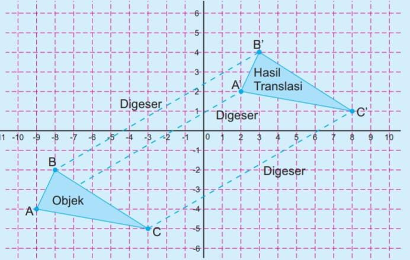
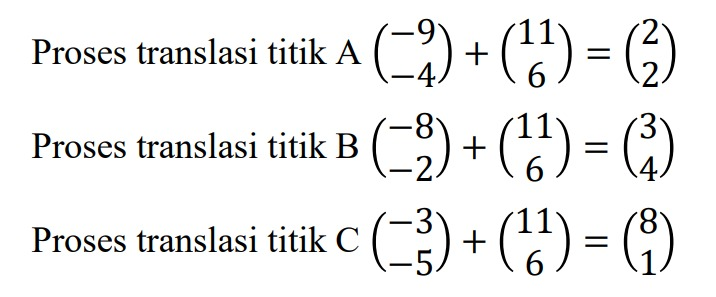
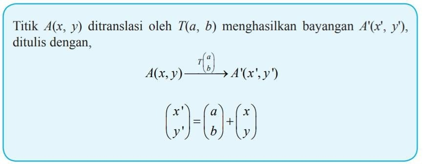

Translasi
Konsep Translasi
Translasi memiliki nama lain pergeseran yang berarti sutatu transformasi yang memindahkan setiap titik pada bidang dengan jarak dan arah tertentu. Perhatikan ilustrasi berikut.
Posisi awa titik A (-9,-4); B(-8,-2); C(-3,-5) kemudian masing-masing bergeser ke kanan 11 langkah dan ke atas 6 langkah, sehingga posisi berubah dikoordinat A’(2,2); B’(3,4); C’(8,1) sesuai gambar. Hal ini dapat dituliskan sebagai
Sehingga, secara umum rumus translasi adalah sebagai berikut :
Lalu bagaimana ya hubungan translasi pada kearifan lokal ?